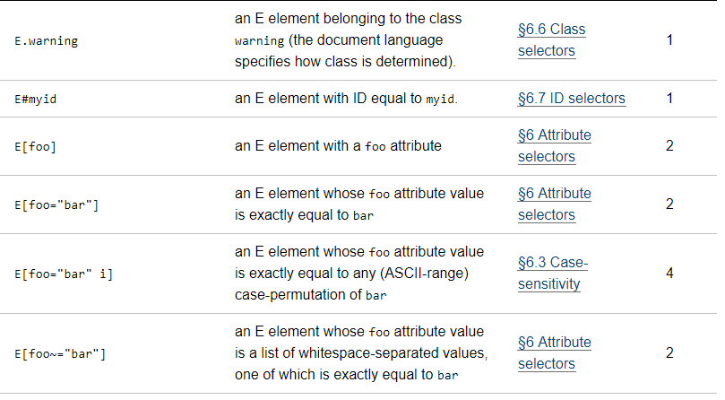
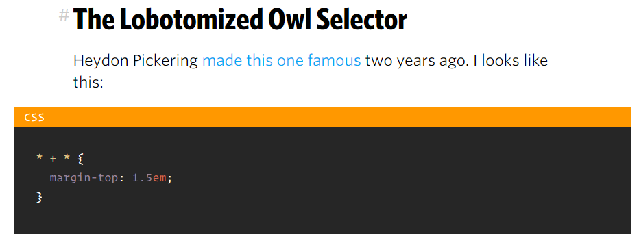
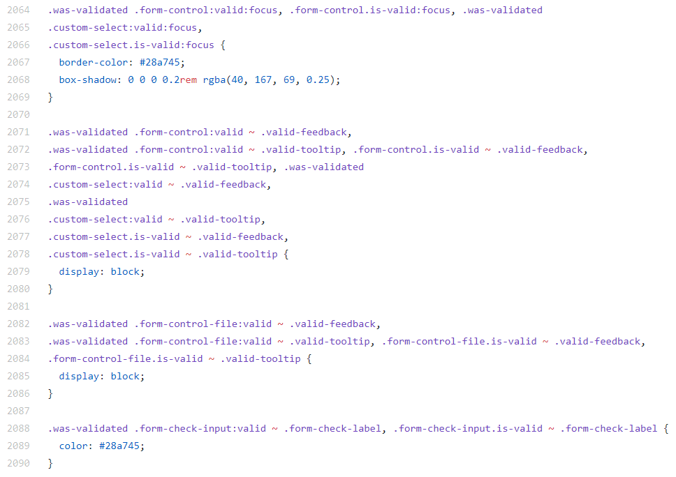
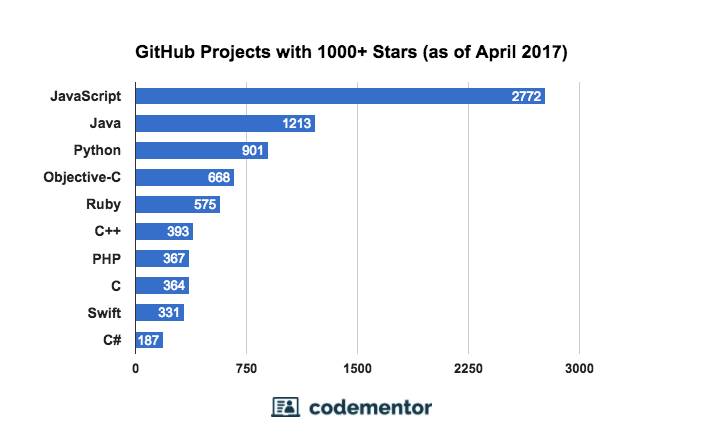
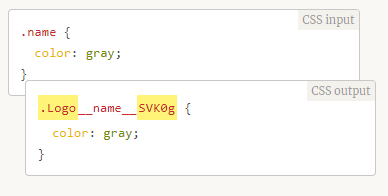
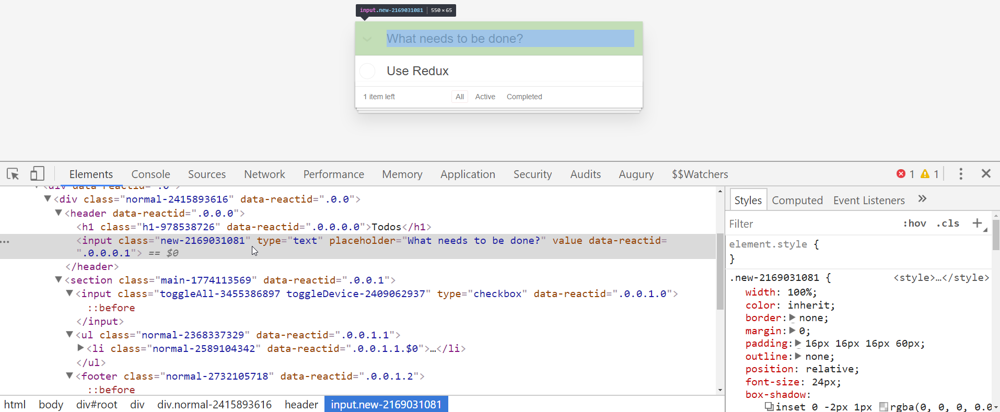
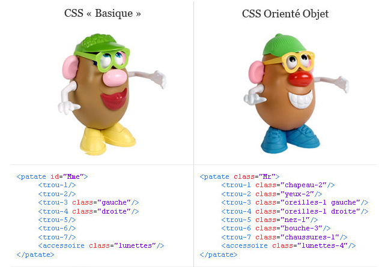

CSS coding conventions
Before we start, never forget this mantra
Any fool can write code that a computer can understand. Good programmers write code that humans can understand.
Martin Fowler @martinfowler
CSS basically
Cascading Style Sheet
Powerfull style inheritance.
Powerfull query selectors.
Powerfull media management.
Powerfull effect engine.
However no style guidance per default
What is the heck?
No code structuration.
No file structuration.
No limitation on queries.
A lot of possible queries...
...with weird possiblities...
...with complex combinations
From boostrap...
As results
Unexpected inheritance.
Code hard to read.
Code hard to maintain.
Possible override on side CSS frameworks.
Side CSS frameworks could override us!
A first (and last) solution appears
Generate CSS from JavaScript
This is not a recent solution (Dojo, Google apps, ...).
But this solution appears again recently, through solution like css-in-js (JSS).
The idea
Define through JavaScript some styling.
Generate a "random" CSS class name.
Share some JavaScript variables (for color, status, etc ...).
Why this approach?
Why not using directly CSS?
Thruly...
Here a quote of one big contributor of one framework
CSS has been designed to style documents, not applications. Anyone that has tried to use CSS at scale knows how it requires too many restrictions and rules to make it work. In short, it's painful and not really a pleasure.
Curious, it was the same logic for JavaScript...
And clearly, we don't use it anymore
Anyway ...
We could share now some CSS variables.
These variables are accessible through domElement.style.getProperty().
These variables are settable through domElement.style.setProperty().
And ...
This is a mess to debug.
Hardly recommended to use sourcemaps.
Some tools like PostCSS do it without sharing JavaScript variables
See it in action (PostCSS)
See it in action (JSS)
Could we have other solutions?
Another way: coding conventions
We have some various CSS coding conventions
- Utilities classes
- OOCSS
- SUITCSS
- BEM and variants
- AMCSS
In all cases, we have some avantages
We could prefix!
Bye bye unexpected overriding
We could reuse it!
We could organize it!
This is humanly understandable!
Utilities classes
Some frameworks use this approach
- BootStrap
- Foundation
- Bulma
- ...
The goal: define a set of CSS classes...
- For component
- For layout
- For animation
- ...
...and use it directly onto the DOM
Not sure this is the best way
Because it could be hard to understand and refactor
Hello, world!
This is a simple hero unit, a simple jumbotron-style component for calling extra attention to featured content or information.
It uses utility classes for typography and spacing to space content out within the larger container.
Learn more
We have loose some semantics
Moreover, the prefix is often not used
So we could have uncompatibilities
Expecially when we use "simple naming"
Bootstrap... Again!!

OOCSS SUITCSS
OOCSS
- Official website: http://oocss.org/
- Separating container and content with CSS “objects”
- Like utilities classes except we try to regroup per component
- Each element has got a CSS class to understand the goal
- We use only CSS classes (and pseudo-classes)
Example
For further details
SUITCSS
- Official website: http://suitcss.github.io/
- Structured class names and meaningful hyphens
- We use only CSS classes
- We have a naming conventions
Naming convention
- Prefix with ".u-" when we have an utility class
-
A component respect the following pattern[<namespace>-]<ComponentName>[-descendentName][--modifierName]
- Where namespace is optional but help to prefix (in lowercase)
- ComponentName is the name of your component (in pascal case)
- -descendentName is the name of a sub component (in camel case)
- --modifierName is a state (in camel case)
Example (CSS)
.MyComponent {}
.MyComponent.is-animating {}
.MyComponent--modifier {}
.MyComponent-part {}
.MyComponent-anotherPart {}
Example (HTML)
Note: descendentName are only on one level
<article class="Tweet">
<header class="Tweet-header">
<img class="Tweet-avatar" src="{{src}}" alt="{{alt}}">
…
</header>
<div class="Tweet-bodyText">
…
</div>
</article>
BEM
BEM
- Official website: http://getbem.com/
- Block, Element, Modifier
- We use only CSS classes (and pseudo-classes)
- We have a naming conventions
- We have a semantic
Block
- Encapsulates a standalone entity that is meaningful on its own
- Not depends of the type of HTML element
- Name should be short and in snake case
- Ex: .my-component, .button, ...
Element
- Parts of a block and have no standalone meaning.
- Any element is semantically tied to its block.
- Name should be in snake case and append with its parent with "__"
- Ex: .block__elem, .block__elem__title ...
Modifier
- Flags on blocks or elements.
- Used to notify a change on appearance, behavior or state.
- Name should be in snake case and append with its parent with "--"
- Ex: .block--color-black, .block__elem--mod ...
Example (CSS)
.button {
display: inline-block;
border-radius: 3px;
padding: 7px 12px;
border: 1px solid #D5D5D5;
background-image: linear-gradient(#EEE, #DDD);
font: 700 13px/18px Helvetica, arial;
}
.button--state-success {
color: #FFF;
background: #569E3D linear-gradient(#79D858, #569E3D) repeat-x;
border-color: #4A993E;
}
.button--state-danger {
color: #900;
}
Example (HTML)
<button class="button">
Normal button
</button>
<button class="button button--state-success">
Success button
</button>
<button class="button button--state-danger">
Danger button
</button>
AMCSS
AMCSS
- Official website: https://amcss.github.io/
- We use only HTML attributes (and pseudo-classes)
- The CSS queries are "stronger" than classical CSS classes
- We have a "semantic"
Big Picture
- Attributes name are in camel case
- We could use a prefix onto the attribute name
- The attribute contains value(s) to applying styling and behavior / state
Example (CSS)
[am-button] { /* Default button styles */ }
[am-button~="primary"] { /* Primary colours */ }
[am-button~="large"] { /* Large sizing */ }
Example (HTML)
<a am-button="primary large">Large primary button</a>
<a am-button>Default button</a>
<a am-button="info small">Small info button</a>
<a am-button="danger extra-small">Extra-small danger button</a>
In conclusion
CSS coding conventions are very powerfull
- Easy to write, read, maintain
- Modular
- Reusable
- Good integration into preprocessors like Less or Sass
Two good candidates
- BEM
- AMCSS
| BEM | AMCSS | |
|---|---|---|
| Pros |
Semantic & Conventions
Code structuration
Easy to use and maintain
|
Semantic
Use of "stronger" CSS query
|
| Cons |
Have sometimes !important due to side frameworks
Nothing for utilities and mixins
|
No conventions
Attributes values have the same problem as CSS utilities frameworks
Nothing for utilities and mixins
|
BEM has got some variants
Where we could have
- BEM
- Utilities classes
- Mixins classes
- ...
For utilities, mixins and others
- We use camel case
- We use CSS classes
-
We prefix with a value
- .u- for utility class
- .m- for mixin class
- a- for animation
Example - Mixins
.m-text-selection(@color: white; @backgroundColor: black) {
&::selection {
background-color: @backgroundColor;
color: @color;
}
}
Example - Utilities
.u-no-border {
border: 0 solid transparent;
}
.u-no-margin {
.m-same-margin(0);
}
Example - Animations
@key-frames a-blink {
0% {
opacity: 1;
}
100% {
opacity: 0;
}
}